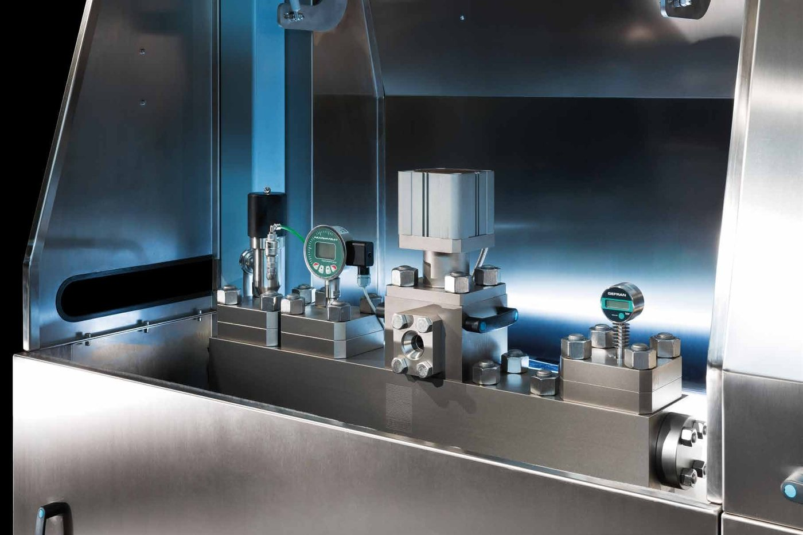
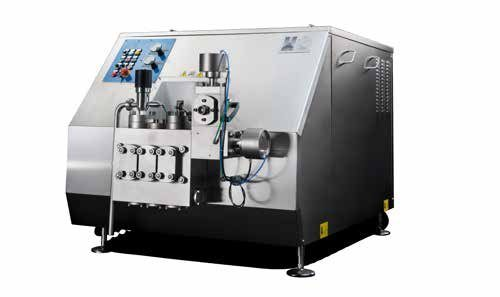
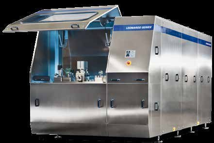
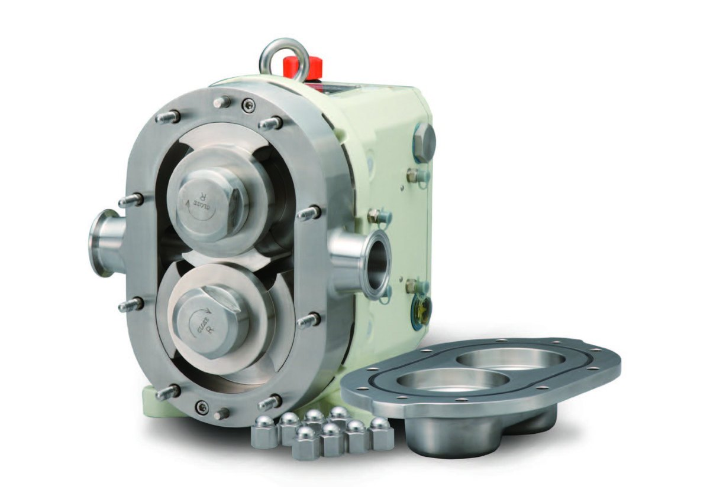
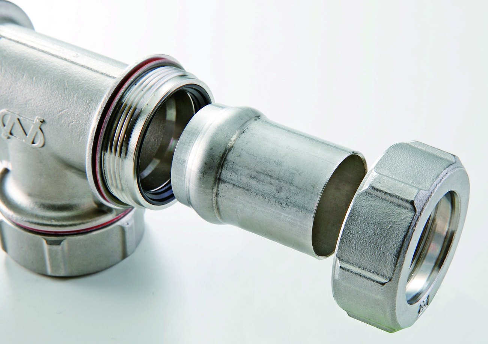
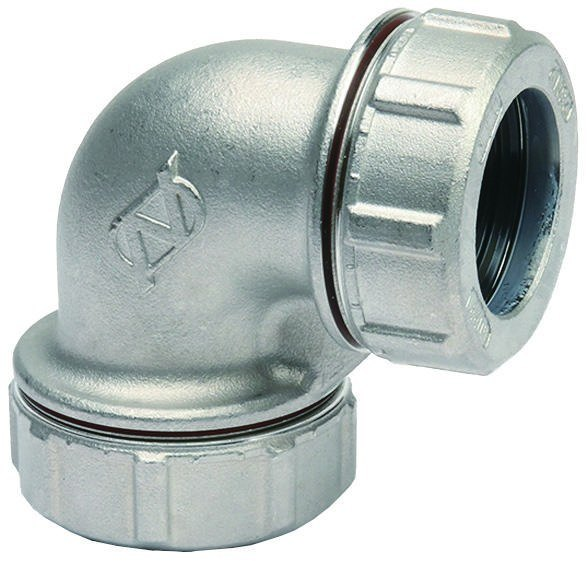
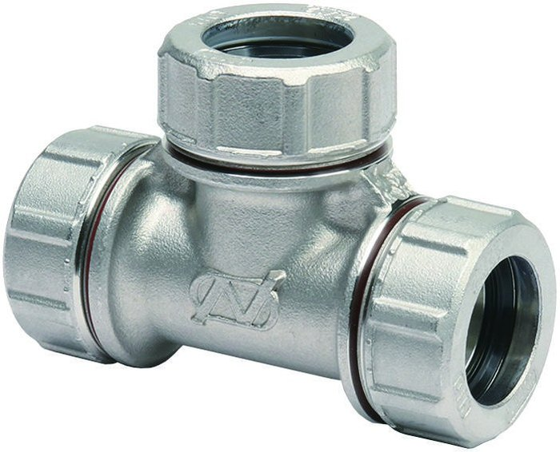
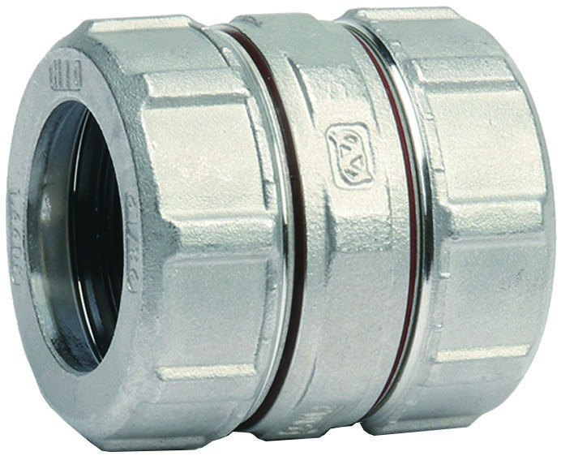

We complete our portfolio of solutions as the official distributor of leading firms in the industry.
Homogenizers and high-pressure pumps for the process industry, an international benchmark in homogenization technology.
bertoli-homogenizers.com ↗Bertoli is an Interpump Group brand dedicated to the design, planning and construction of high-pressure homogenizers and piston pumps for the food industry. It was founded in 1974 by Vittorio Bertoli and, since 2016, has been part of Interpump Group, the world's largest manufacturer of professional high-pressure piston pumps.
Its machines have a sanitary design: all product-contact parts are designed and manufactured to the strictest international standards for the food and pharmaceutical industries.
Download catalogue (PDF, ES) ↓

Flexible high-pressure homogenizer and pump for industrial production of up to 22,000 l/h. Especially suitable for the dairy sector and for fruit juice homogenization, with many options for special uses in the chemical, cosmetic and pharmaceutical sectors.

High-pressure homogenizer and pump designed for great reliability and simple maintenance. Especially suitable for the dairy sector and for fruit juice homogenization.
Patented pump for products with chunks. Thanks to its pneumatic valves, wide passage sections and delayed piston, it pumps products with chunks of up to about 30 mm in diameter; it primes with minimal loads and needs no feed pumps.
Pump for products with chunks that treats the product less aggressively and keeps more whole pieces. Suitable for pumping products with chunks of up to 60 mm.
Designed for the processing cycle of tomatoes, stone-free fruit and plant fibre for biogas plants: it produces a fine, regular size for subsequent heat treatment. Its magnetic-coupling drive protects the pump from overloads, and a version with a rotating blade is available for cutting grass and plant residues.
For testing with small product quantities and extrapolating the results to industrial production.
Equipment and engineering solutions for industrial processes, expanding the technical capacity ANANTA offers its clients.
nakakin.eu ↗Nakakin is a Japanese manufacturer of rotary piston pumps, founded in 1950. It makes the main liquid-contact parts of the pump in its own foundry and controls the whole process: from casting and component manufacturing to assembly, performance testing and shipping.
It holds 3-A and EHEDG (European Hygienic Engineering and Design Group) certification, and every pump undergoes performance testing to ensure safety.
Download catalogue (PDF, ES) ↓
Internal mechanical seal (JM) or O-ring (JO). Their simple structure, which makes disassembly and assembly easy, their long service life and high performance make them the most popular models.
External mechanical seal, with a choice of single, quench or tandem. Designed for a wide variety of liquids, it works especially well with corrosive liquids and with fibres.
Designed for fully aseptic liquid transfer: it completely isolates the liquid from the atmosphere. With sterile water and steam, it is suited to aseptic production lines for long-life products such as dairy and medicines.
Designed specifically for easy cleaning and washing: its flat cover and the elimination of protrusions allow effective cleaning with less residual liquid.
Components and fittings for industrial installations, integrated into our maintenance and assembly projects.
onk-net.co.jp ↗O.N. Fitting is an expansion-type fitting for light-gauge stainless steel pipes, made by O.N. Industries Ltd. (ONK) of Japan. It is installed without heat or flame, requires no specialized technology and is not a pressed-type fitting.
Its principle: the pipe-expanding rubber is expanded by an axial load under oil pressure; a cap nut and a flange are then fitted to the end of the expanded pipe, and the rubber seal, housed in a triangular chamber, seals the liquid. ONK holds ISO 9001 and ISO 14001 certificates and the DVGW type examination certificate.
Download catalogue (PDF, ES) ↓
Easy to install, without needing much time to acquire the skills. Tightening can be checked visually through the conical washer, so the cap nut is never left loose.
With a dedicated pipe-expanding machine, anyone can do the work. Prefabrication by cutting and expanding pipes to drawings can be done in a pipe workshop, and final on-site assembly is simpler.
Excellent durability, with a unique structure and expansion system and proven seismic testing. Its products have been verified to withstand earthquakes of up to approximately MSK XII, applying an acceleration of 2,000 Gal to the pipes.
It uses thin-wall stainless steel pipes: easy to transport, handle and operate even in tight spaces.
Hygienic stainless steel does not produce red or blue water from pipe corrosion, is environmentally friendly and has a long service life. As no open flame is used, it is ideal for repairs.

Diameters from φ15/1.0 to φ54/1.5 mm. Also available in a reduced version.

Diameters from φ15/1.0 to φ54/1.5 mm. Also available in a reduced version.

Diameters from φ15/1.0 to φ54/1.5 mm. The range also includes reducers and male, female and flange adapters.
Machines designed exclusively for the O.N. Fitting system: using them with mechanical fittings of other brands, or expanding pipes with other machines, will affect performance.
In California, ANANTA USA also represents Travaini Pumps.
travaini.com ↗Full details on the equipment we supply and support under this representation are being finalized. For current availability, contact our California office.
Contact our team →